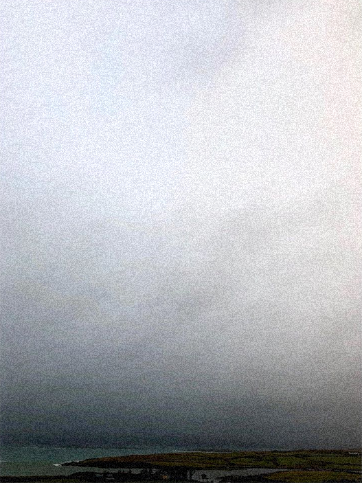

i always wonder why birds choose to stay in
the same place when they could fly
anywhere on earth
- i then ask myself the same
i think it doesnt matter if youre aware of it
or not
how tidal everything seems
that one day you might stand on paradise
not move and soon be drowning
or how some things you left behind
wait for you in your hotel room, some place
for latent change
to be reclimbed, reassembled
and unknotted
for me to say anything i must first have
listened
for you to find anything you have to look
even in some small way
As above so below
the blue, the blue, and blue
running, tripping, falling
it was kind of like waking up from dream
those lifelike episodes
you second guess yourself wondering
if any of it actually happened
The last forever in third person
A chase cam rolling with the current
Pushed, moved,
and pulled out of view
and ive been thinking about a change of
pace
or the pace of change
or how the last few years were a singularity
you were the universe folding in on itself
information bleeds
no name
no location
no frame of reference
running, tripping, falling
unsure of what it was i turned around and
carried on
